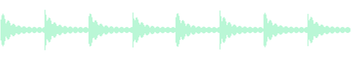
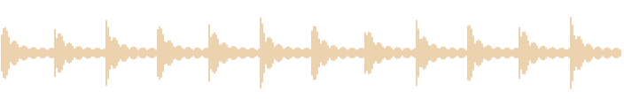

Record & overdub
Manual or automatic overdubs. Undo and Redo for recent passes, clears and deleted layers. Arm recording to wait for sound.
Native Windows loop pedal
Two loopers, editable layers and hands-on effects. Record an instrument, import a sample, then change what it does.
Download for Windows

A short phrase and a long loop.
Independent lengths. Quantized starts.
01 / THE LOOPERS
Use a hardware-style destructive loop, or keep passes as separate layers. Add a second looper for phrases of different lengths.

Actual Windows interface · Dual mode with separate layers
Manual or automatic overdubs. Undo and Redo for recent passes, clears and deleted layers. Arm recording to wait for sound.
Drag Start and End grips, cross them to reverse, and scroll to zoom. Adjust pitch, stretch, filter, level and pan.
BPM, measures, quantized starts and an optional count-in. A recording click stays out of your captured audio.
Assign transports and knobs to MIDI. Hide the editors when you want space. Press F11 for immersive fullscreen.
02 / THE EFFECTS
Separate sends for A and B, shared effect parameters. Each looper gets its own filter and its own frozen grain capture.
NEW IN 1.2.5: A STRONGER CLOUDY RANGE
Granular / Clouds / Cloud Delay
Freeze, density, spray, stereo spread and dry/wet. Grain sizes from 2 ms to 1 second.Delay / Ping-Pong / POTS
Tempo-synced divisions, feedback, and the 12 kHz, 8-bit character of POTS.Hall / Room
Decay and tone controls, with independent send levels for the two loopers.SIGNAL ROUTING
Serial follows the visible tab order. Hold and drag the tabs in the app to change the order.
INTERACTIVE ROUTING PREVIEW03 / GET AGENT LOOPER
A portable Windows app.
No installer. Keep the folder together.
Extract the complete ZIP. Keep the DLLs, tools and license files next to Agent-Looper.exe.
Run the app and open AUDIO. Select your input channel or stereo pair and an output. Changes apply automatically.
Press REC to start and finish a take. DUB adds another pass. PLAY stops or restarts the loop.
Open FX to shape the sound. Use MENU for timing, looper modes, import and export.
New sessions start with one destructive looper. Enable the second looper in MENU → Layout.
The headphone button toggles app input monitoring. Keep hardware direct monitoring off when using app monitoring to avoid hearing both paths.
Import audio or extract audio from supported video formats, up to ten minutes. Export 48 kHz stereo 32-bit float WAV before closing; Windows does not save editable sessions.
ASIO drivers can be busy in another application. Close older copies of Agent Looper if your interface reports that it is in use.

INDEPENDENT SOFTWARE
Agent Looper is free and open source. If you find it useful, you can support A.V.’s work.
Buy A.V. a coffee (opens in a new tab)